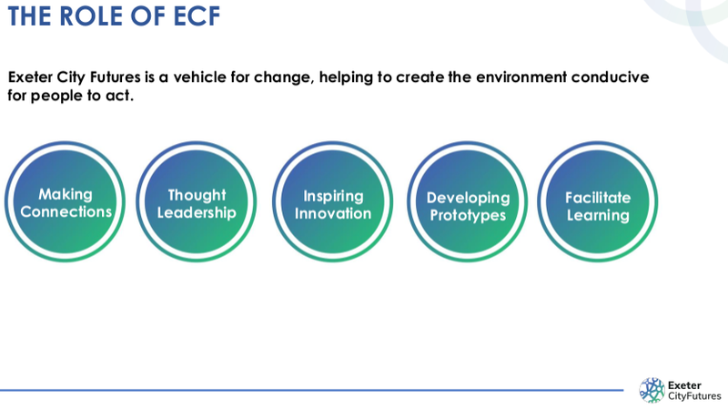

Exeter City Futures used to say that its mission was to “make Exeter energy independent and congestion free by 2025”, an aim it intended to achieve within the decade following its 2015 launch.
The city council began financing the company to this end in 2016, then decided to make it responsible for delivering Exeter decarbonisation in 2019, when it declared a climate emergency and commissioned the company to perform a full baseline audit of the city’s greenhouse gas emissions, identify how Exeter could “achieve zero carbon” and produce a plan to deliver it.
Six months later Exeter City Futures admitted that it did not have the “resource capacity” to perform a city greenhouse gas emissions audit. The company nevertheless continued work on its Net Zero Exeter plan without an emissions audit on which to base it.
The council said and did nothing about this.
The resulting plan proposes a collection of vaguely-defined activities, very few of which are accompanied by quantified emissions reductions projections. Those that are only account for 329,000 tonnes of annual Exeter greenhouse gas emissions.
The council nevertheless adopted it in July 2020 and the Liveable Exeter Place Board followed suit on behalf of dozens of organisations.
Two months earlier, however, Exeter City Futures had privately commissioned engineering consultants WSP to review the plan. The firm found it had numerous inconsistencies and flaws.
WSP’s unsurprising primary recommendation was that a baseline audit of Exeter’s greenhouse gas emissions should be performed.
It also found that the plan’s emissions reductions figures needed “recalculating”, that it needed an “underlying model of reality” and that “clarity would be useful” on why its goals had been chosen.
Exeter City Futures promised to update the Net Zero Exeter plan by December 2020, three months after the WSP review was completed, then update it annually thereafter, but it remains unchanged since its publication more than two years ago.
The council finally revisited the issue last December after Exeter Green Party renewed its calls for a city carbon budget which specified meaningful annual emissions reductions based on a properly calculated baseline audit.
The council resolved, for the second time, to “establish a carbon budget for the city of Exeter to show the baseline position for the city, the various city sectors who [sic] contribute to carbon emissions [and] the targets to achieve net zero”.
But when the council finally published the long-overdue Exeter greenhouse gas emissions baseline inventory last month, produced by a specialist University of Exeter team, it only accounted for scope one and two territorial emissions, effectively ensuring Exeter will not meet its net zero targets.
An unnamed council officer had secretly decided to exclude scope three emissions from the inventory despite neither of the decisions taken by councillors mentioning any such exclusion.
When we asked the council to explain this decision it refused to say who had taken it and claimed that “there was no intention to include scope three emissions in this particular commission”.
City council chief executive Karime Hassan nevertheless subsequently claimed that the university study “quantified the reductions required to achieve net zero by 2030”.
He also asserted the viability of the Net Zero Exeter plan as well as the central role of Exeter City Futures, a private company of which he is also chief executive, in delivering it.
Greenhouse Gas Protocol for Cities – sources and boundaries of city greenhouse gas emissions
None of this sorry history, or the millions of tonnes of greenhouse gas emissions the city has generated while it has been unfolding, has deterred the council and its partners from indulging in a series of overconfident climate leadership claims.
In 2020 Labour councillor Rachel Sutton, then council net zero lead, said Exeter is “in the vanguard of this nationwide challenge”.
In 2021 the council repeatedly claimed that the Net Zero Exeter plan provides “a clear roadmap to carbon neutrality” and “sets out what Exeter will need to put in place in order to be net zero carbon by 2030”.
Earlier this year Labour’s local election campaign leaflets said Exeter is “an exemplar city in the UK for carbon reduction” which is “leading the way on climate change and the green agenda”.
And last month Labour councillor Duncan Wood, who is now responsible for the city’s response to the climate crisis, claimed that “Exeter is well known for leading the way” in emissions reduction.
However, within the limits imposed by the council’s decision to restrict it to scope one and two emissions, the university Exeter greenhouse gas inventory confirms the redundancy of the Exeter City Futures Net Zero Exeter plan.
The plan doesn’t just fail to address Exeter’s scope three emissions: recognised greenhouse gas emissions inventory methodologies are nowhere in sight.
Many of the figures it does include are derived using ad hoc methods which produce major miscalculations, including the use of incorrect gas and electricity emissions factors and erroneous cost and impact assumptions.
These vary significantly from the estimates and targets calculated by the university team, which are based on the government’s legally-binding Sixth Carbon Budget.
Four of 26 Net Zero Exeter plan “priority actions” showing emissions savings miscalculations and erroneous cost assumptions
For example, the Net Zero Exeter plan only addresses around 68,000 tCO2e (tonnes of carbon dioxide equivalent) of Exeter emissions from all its transport actions put together. The university study accounts for 106,000 tCO2e of emissions from this source.
At the same time the plan addresses just 1,200 tCO2e of Exeter emissions from waste. The university study accounts for 33,500 tCO2e of emissions from domestic waste alone.
Government figures for both these emissions sources are readily available. Exeter’s performance has hardly changed over many years.
The Net Zero Exeter plan claims its emissions reductions figures are for 2031. As the university study accounts for Exeter’s territorial emissions from 2019 and does not include any of the city’s planned 12,000 new homes or the 22% population increase that will accompany them, the gaps between its estimates and the plan figures are much wider still.
The plan ignores entire emissions sectors altogether, fails to distinguish between energy sources and uses, includes no account of emissions reductions trajectories or expected grid emissions changes and provides neither emissions accounting mechanisms nor annual greenhouse gas emissions reduction targets.
Exeter City Futures website - vision & mission summary
Mr Hassan did appear to acknowledge that the Net Zero Exeter plan does not fulfil its billing at a meeting of scrutiny councillors held last month to discuss the university study.
He said: “There’s a big difference between a road map and an action plan that defines the resources, when and how you’re going to do it.”
Exeter City Futures nevertheless ignored the gulf between its plan and the university study in a subsequent statement in which it said that the latter would “guide our actions over the next eight years as we support the city to their [sic] aim of carbon neutrality for 2030”.
The plan’s numerous shortcomings and its incompatibility with the university study cannot simply be glossed over. If the latter is to be taken seriously then the former cannot also be.
 The role of Exeter City Futures - Exeter City Council strategic scrutiny committee presentation
Despite these failings Mr Hassan emphasised the “thought leadership” role he said Exeter City Futures had played in the city since 2016.
He said that Met Office and University of Exeter expertise in environmental intelligence and climate science had been the city’s USP and key to the regional narrative since 2018.
He also cited a “strong culture of collaboration in the city” which he said had been facilitated by the Liveable Exeter Place Board, which first met in 2019.
He did not explain the role of thought leadership, expertise and collaboration in the university study’s finding that Exeter emissions reductions to date had resulted largely from national electricity grid supply changes, rather than changes made locally.
He nevertheless claimed, in a revisionist history of Exeter City Futures included in his report to councillors, that “the transition to a low carbon future for Exeter has been solid”.
By the end of this year the council will have spent £500,000 of public money supporting the company, and has had to allocate another £120,000 to the cost of emissions calculations by the university team.
All the city has to show for it, three years late, are incomplete decarbonisation targets without delivery policies or plans.
It is difficult to imagine a context in which delivering so little over so long at such public expense could justify continuing as before, particularly when racing against a clock that counts accumulating emissions as well as time passing.
Mr Hassan even acknowledged that Exeter City Futures remains unable to deliver, saying: “If the role of Exeter City Futures is defined as a change agent, a vehicle for the city’s organisations to keep a focus on the challenge and to align and co-ordinate activities towards a net zero goal then the capacity of the team is insufficient to meet the task”.
He nevertheless also said the company “can continue to perform an effective role in moving the agenda forward, but in an opportunistic way rather than as supporting a programme designed to meet defined targets.”
This bizarre proposition appears to deny the basis on which UK law requires decarbonisation to proceed.
It also seems to be his justification for proposing that the council should continue to rely on Exeter City Futures to provide ways and means for Exeter to meet its net zero 2030 target, which he described as inviting the company “to reflect on the challenges of resourcing the step change in activity to meet the net zero 2030 goal and to suggest options for meeting these challenges”.
He subsequently suggested that the company would need additional financial support, which he described as “an enhanced resource commensurate to the challenge in hand”.
Nothing was said about possible conflicts of interest arising around Mr Hassan’s proposal as council chief executive for the council to commission the services of a private company of which he is also chief executive, nor about his participation in scrutiny and executive decision-making meetings which directly addressed the company’s role.
If Mr Hassan and another senior council director really have been working on Net Zero Exeter plan delivery since they were sent to work at the company in January, which was the primary reason given for sending them there, why might it sill be incapable of fulfilling this purpose?
When Mr Hassan proposed that the council support the company in 2015 it expected to achieve its aims “through the use of pioneering technology and data analytics” while also “promoting business growth and increased investment”.
It appears that these theory of change assumptions remain unexamined: at the meeting he reasserted the role of research-intensive technocratic decarbonisation “innovations” that require significant investment and development lead time.
Low cost, low tech approaches to emissions reduction that simply involve cutting resource consumption are not on the agenda, despite the success of many such initiatives in cities elsewhere, apparently because the council and its partners will not pursue non-profit options.
Yet the case for an approach that seeks to support what the chief executive misguidedly describes as “green growth” is becoming weaker every day.
To take just one issue, the scale of household and organisational spending as well as infrastructure investment required to replace our existing combustion engine transport system like for like with electric motor-powered mobility is enormous.
We are nowhere near able to make this transition, let alone embark on it at the rate that would be necessary to decarbonise by 2050, never mind 2030.
Not only is demand for electric vehicles already outstripping supply because of materials shortages which are likely to become more acute, electricity distribution grid constraints prevent their widespread use in Exeter.
There is currently little prospect of these barriers being addressed by private or public sectors.
Meanwhile the university study confirms that lower levels of vehicle use supported by the introduction of a strict clean air zone are likely to be the most effective way of reducing these emissions.
And it is becoming increasingly clear that continuing to prioritise private vehicle use of urban space, given the many other changes we also need to make in towns and cities, would be self-defeating.
But Mr Hassan’s comments at last month’s council meeting strongly suggest that he has only recently begun to grasp the scale of change that is needed, even while ignoring Exeter’s imported emissions, and not yet how to enable it.
He said: “Every sector has technical, financial and political issues that we need to get into the detail of in order to understand how you go about doing this. Obviously that’s what I’m trying to get my head around with Exeter City Futures.”
He also said: “The pace of change, I think, is a thing that really does hit home to me. It’s not about what we’ve been doing, it’s on another level.
“I need to get my head around it from Exeter City Futures’ point of view as well, the messages Exeter City Futures needs to deliver on this.”
It should not be news to him, for example, that “a step change in cycling and significant reduction in car usage” is required.
And yet the council’s continuing commitment to spending nearly £20 million to keep the city’s multi-storey car parks in use for another 40 years suggests that it is.


{kind=link}
{kind=link}
{kind=link}